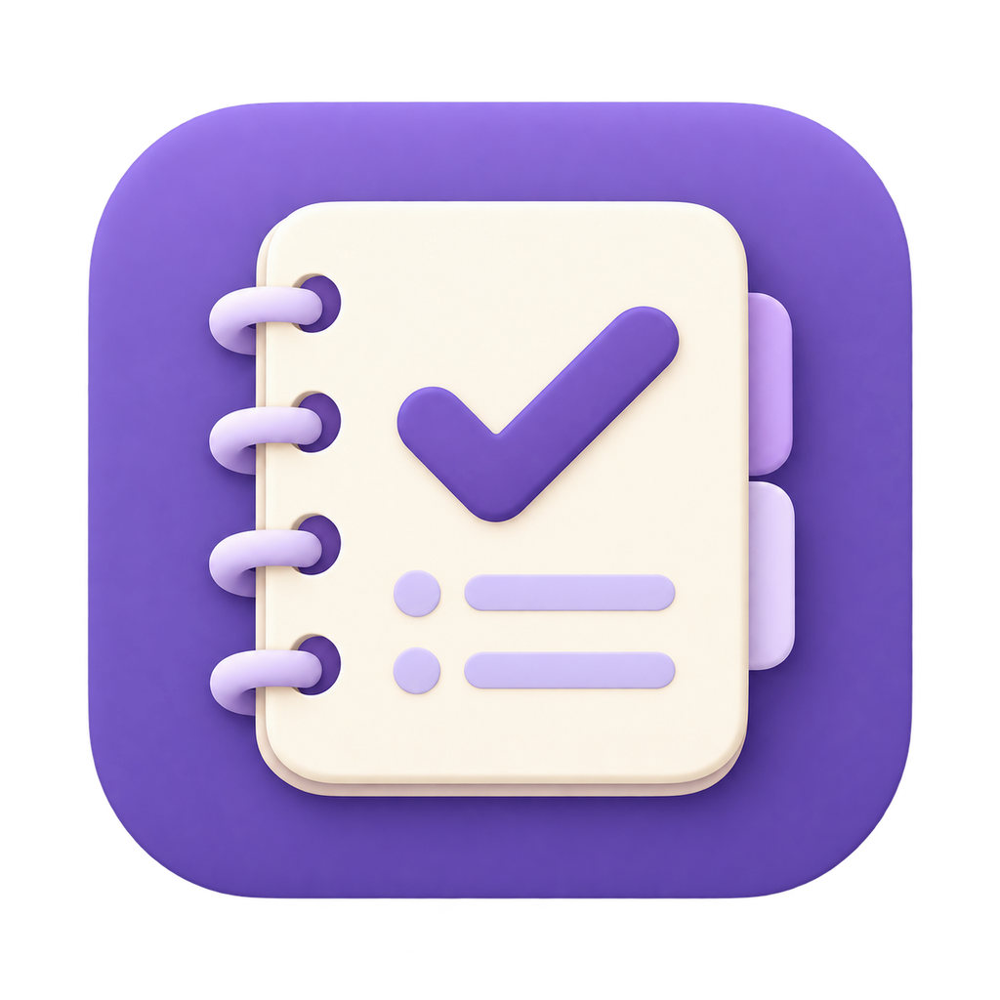

選考の流れを整理
企業情報と選考状況をカンバンで見渡し、面接の記録やメモを残せます。

就活トラッカーJOB TRACKER就活トラッカー / デスクトップアプリ
気になる企業も、次の面接も。
散らばりがちな就活の情報を、パソコンの中にひとまとめ。
現在は開発版です。利用環境・配布状況は使用ガイドをご確認ください。
自分の記録を見渡せる。
企業情報と選考状況をカンバンで見渡し、面接の記録やメモを残せます。
日程や締切をまとめて管理。企業ごとの待遇も比較できます。
Google DriveへのバックアップやAI連携は任意です。基本の企業管理はGoogle接続なしで使えます。
OPTIONAL BACKUP
Google Drive連携を有効にすると、自分のDrive内のアプリ専用領域へ記録を保存できます。送る内容を確認してから、手動でバックアップを保存します。
Driveへ送る情報と権限を見る →内容を確認して、手動で保存 ↓
開発者のサーバーを経由しません。
バックアップJSON自体は暗号化されません。
データの保存先、Google連携で許可する範囲、データを消す方法を公開しています。